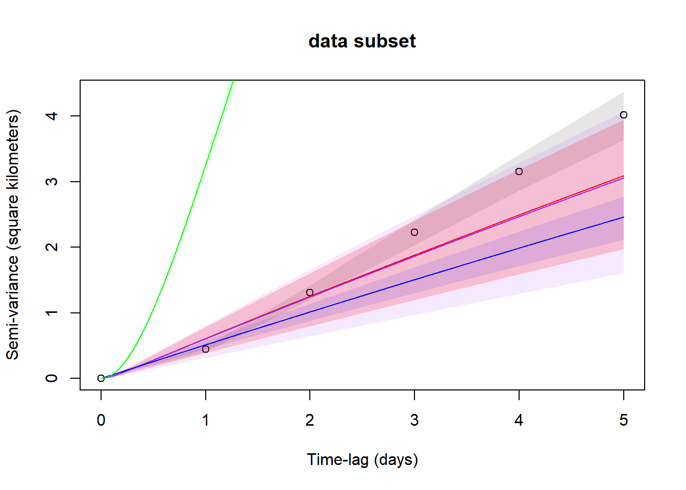
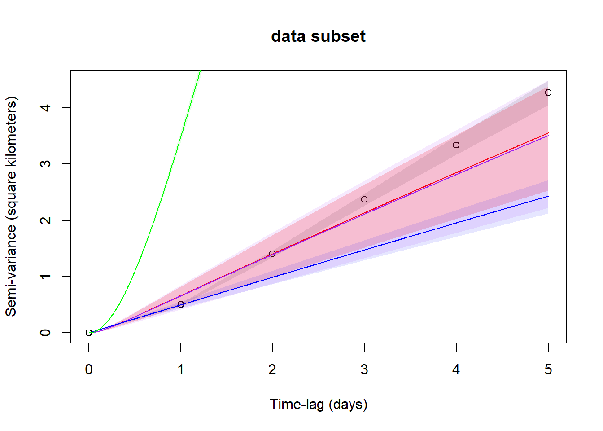

library(ctmm)
# musk_move <- read.csv(here("data/raw/muskox_data/musk_collar_filt_movebank.csv"))
musk_move <- readRDS(here("data/processed/musk_move.rds"))
musk_tel <- as.telemetry(musk_move)[c(-2,-4,-5)]Lifetime Home Range
In this document, we will estimate home range size for collared muskoxen and look to compare range overlap and size across years and seasons.
Estimating Movement Model
Before we can estimate home ranges for the collared muskoxen, we need to determine an appropriate movement model. To do this, we will use variograms. Our data has been updated to conform to Movebank naming conventions so that we can use the ctmm package.
First we will plot empirical variograms for each collared muskoxen. Variograms are used to quantify spatial dependence between locations at different points in time. In general, as the time between locations increases, spatial dependence decreases. Variograms plot the semi-variance of distances between pairs of points separated by different time lags. At short time lags, these distances are very similar and the semi-variance is low. At large time lags, there is greater variability in the distances between points, so the semi-variance is high. Usually variograms will reach an asymptote in semi-variance that represents the time lag at which the animal is able to traverse their home range. For now we will leave out the muskoxen that had collar failures as they do not have enough data to estimate home ranges.
musk_var <- lapply(musk_tel, variogram, CI="Gauss", fast = TRUE)
xlim <- c(0,5 %#% "day")map(musk_var, function(x) x %>% as_tibble() %>% mutate(id = x@info$identity)) %>%
list_rbind() %>%
mutate(level = 0.95,
ci.lower = SVF*qchisq((1-level)/2,DOF,lower.tail=TRUE)/DOF,
ci.upper = SVF*qchisq((1-level)/2,DOF,lower.tail=FALSE)/DOF) %>%
group_by(id) %>%
slice(seq(0.5*n())) %>%
ungroup() %>%
ggplot(aes(x = lag, y = SVF)) +
geom_linerange(aes(ymin = ci.lower, ymax = ci.upper), colour = "grey") +
geom_line() +
facet_wrap(~id, scales = "free_y") +
theme_bw()
Most of these look fine, however for two of the longer time series (7011 and 7012) the semi-variance appears to reach an asymptote by the first year, but starts increasing again part way through the second year. If this behaviour is common, home range estimates may be biased even after a year’s worth of data. If muskoxen truly are nomadic and lack site fidelty, kernel density methods may not be appropriate (Silva et al., 2022).
It is also clear there are some issues with collars 708 and 7010. Closer inspection of the data reveals that, every 7 fixes, there is a longer 24 hour delay until the next fix. Currently, the model uses the median sampling interval (8 hours) to estimate the variogram. The variogram function allows is to specify more than one time interval (in our case, 8 and 24 hours) to progressively coarsen the variogram. We can also specify an interval-weighted algorithm to further improve the appearance of the variogram.
dt <- c(8,24) %#% "hour"
musk_var[[2]] <- variogram(musk_tel[[2]], dt = dt, CI="Gauss", fast = FALSE)
musk_var[[3]] <- variogram(musk_tel[[3]], dt = dt, CI="Gauss", fast = FALSE)map(musk_var, function(x) x %>% as_tibble() %>% mutate(id = x@info$identity)) %>%
list_rbind() %>%
mutate(level = 0.95,
ci.lower = SVF*qchisq((1-level)/2,DOF,lower.tail=TRUE)/DOF,
ci.upper = SVF*qchisq((1-level)/2,DOF,lower.tail=FALSE)/DOF) %>%
group_by(id) %>%
slice(seq(0.5*n())) %>%
ungroup() %>%
ggplot(aes(x = lag, y = SVF)) +
geom_linerange(aes(ymin = ci.lower, ymax = ci.upper), colour = "grey") +
geom_line() +
facet_wrap(~id, scales = "free_y") +
theme_bw()These look better. Collars 7011 and 7012 do not appear to reach an asymptote in semi-variance as lag increases, suggesting that these individuals are not range resident. 7010 has a somewhat bell-shaped curve. This can be indicative of distinct winter and summer grounds. However, given that muskoxen appear to have limited movement in the winter and the ~1-year time series for 7010 starts and ends in winter, it seems more likely that the wintering grounds from one year to the next happened to be close together.
We can diagnose these issues further by fitting a variety of custom variogram functions to our data using the ctmm.select function.
### fist create a best guess set of parameters for the model
musk_var_mod <- lapply(musk_var, variogram.fit, interactive = FALSE)
#fit <- mapply(function(x,y){ctmm.select(x,y,verbose = TRUE,cores = 3)},musk_tel,musk_var_mod)
#saveRDS(fit, here("output/musk_var_fit.rds"))
fit <- readRDS(here("output/musk_var_fit.rds"))
for (i in 1:length(musk_var)){print(musk_var[[i]]@info$identity);print(summary(fit[,i])); plot(musk_var[[i]], CTMM = fit[,i], col.CTMM=c("red","purple","blue", "green"),fraction=0.5,level=0.5);plot(musk_var[[i]], CTMM = fit[,i], col.CTMM=c("red","purple","blue", "green"),xlim = xlim,,level=0.5)}[1] "706"
ΔAICc ΔRMSPE (km) DOF[area]
OUF anisotropic 0.00000 2.077907 9.617055
OUF 42.66530 1.890928 9.990823
OU anisotropic 68.82166 2.245986 7.367132
OUf anisotropic 1317.33573 0.000000 219.589031
[1] "708"
ΔAICc ΔRMSPE (km) DOF[area]
OUF anisotropic 0.0000 1.244331 25.89534
OUF 116.7679 1.350865 18.22964
OU anisotropic 198.9542 1.852910 21.97129
OUf anisotropic 1030.2342 0.000000 285.96732
[1] "7010"
ΔAICc ΔRMSPE (km) DOF[area]
OUF anisotropic 0.00000 3.760725 8.090865
OUF 57.73839 3.915642 8.109727
OU anisotropic 149.18384 4.605075 4.914131
OUf anisotropic 442.22301 0.000000 113.628816

[1] "7011"
ΔAICc ΔRMSPE (km) DOF[area]
OUF anisotropic 0.0000 5.483670 8.988154
OUF 352.6867 6.712407 5.586937
OU anisotropic 468.8016 6.491142 8.365915
OUf anisotropic 2604.0344 0.000000 336.211689
[1] "7012"
ΔAICc ΔRMSPE (km) DOF[area]
OUF anisotropic 0.0000 3.607974 12.453842
OUF 136.5556 4.887839 10.391674
OU anisotropic 296.2989 4.133481 8.086789
OUf anisotropic 2682.6031 0.000000 368.948403

[1] "7013"
ΔAICc ΔRMSPE (km) DOF[area]
OUF anisotropic 0.0000 3.001076 13.847073
OUF 108.0571 2.462135 15.168212
OU anisotropic 350.1016 3.654844 8.005831
OUf anisotropic 2123.5205 0.000000 359.910030[1] "7080"
ΔAICc ΔRMSPE (km) DOF[area]
OUF anisotropic 0.0000 2.230820 23.94430
OUF 73.9577 2.820220 21.23700
OU anisotropic 216.7409 2.475281 15.64506
OUf anisotropic 1048.6776 0.000000 278.59866These look okay, but they aren’t capturing the short timescales well in all instances. This could be an issue with these individuals not being range resident, but it could also be related to telemetry error. To try to rectify this, we can attempt to fit models that account for potential error in the telemetry data.
Incorporating Error
We will use location information for the collar 707, which had its release mechanism triggered early. Since this collar was stationary once it was released from the animal, we can use deviations from its average position to estimate telemetry error. This will partially account for instances where the muskox appeared to have moved between successive time stamps, but really didn’t or instances where the muskox appeared to move between successive time stamps, but really didn’t.
musk_collar_cal <- read.csv(here("data/raw/muskox_data/musk_collar_cal_movebank.csv"))
musk_cal <- as.telemetry(musk_collar_cal)
UERE <- uere.fit(musk_cal)
uere(musk_tel) <- UERE
musk_var_mod_err <- lapply(musk_tel, ctmm.guess, interactive = FALSE, CTMM=ctmm(error=TRUE))
musk_var_mod_err[[2]] <- ctmm.guess(musk_tel[[2]], interactive = FALSE, CTMM=ctmm(error=TRUE, dt = dt))
plot(musk_cal[[1]])We can now rerun our original movement model selection process while incorporating the error model estimated above. Let’s plot the model results again, this time comparing the top models with those that did not have telemetry errors accounted for.
[1] "706" ΔAICc ΔRMSPE (km) DOF[area]
OUF anisotropic error 0.00000 2.2344179 9.617917
OUF error 42.65746 2.0474638 9.991301
OU anisotropic error 68.86482 2.4026258 7.366628
OU error 107.91054 2.2263595 7.684893
OUf anisotropic error 1316.99896 0.1567056 219.546373
OUf error 1367.62263 0.0000000 228.148524[1] "708" ΔAICc ΔRMSPE (km) DOF[area]
OUF anisotropic error 0.0000 1.2443120 25.89589
OU anisotropic error 116.8106 1.3508841 18.22860
OUF error 198.9487 1.8528991 21.97189
OU error 325.4510 1.9797853 15.30454
OUf anisotropic error 1029.9538 0.0000000 285.93097
OUf error 1268.4792 0.4381442 282.14732
[1] "7010" ΔAICc ΔRMSPE (km) DOF[area]
OUF anisotropic error 0.00000 3.7607686 8.090526
OUF error 57.72832 3.9154332 8.110248
OU anisotropic error 149.19731 4.6047100 4.914693
OU error 211.55879 4.5896619 4.985999
OUf anisotropic error 442.14512 0.0000000 113.619823
OUf error 497.21636 0.2162585 112.606598[1] "7011" ΔAICc ΔRMSPE (km) DOF[area]
OUF anisotropic error 0.0000 2.194838e+00 8.989618
OU anisotropic error 352.7649 3.423462e+00 5.587907
OUF error 468.7999 3.202627e+00 8.366086
OU error 854.4724 4.413170e+00 5.282838
OUf anisotropic error 27860.7070 2.326091e-07 2789.993767
OUf error 30005.0189 0.000000e+00 2789.999385
[1] "7012" ΔAICc ΔRMSPE (km) DOF[area]
OUF anisotropic error 0.0000 3.6080627 12.453757
OUF error 136.5608 4.8879238 10.392073
OU anisotropic error 296.3918 4.1337411 8.085986
OU error 476.4013 5.8450604 6.302248
OUf anisotropic error 2682.0341 0.0000000 368.899939
OUf error 2824.9064 0.6804765 379.614187[1] "7013" ΔAICc ΔRMSPE (km) DOF[area]
OUF anisotropic error 0.0000 3.2654029 13.848277
OUF error 108.0515 2.7264739 15.168750
OU anisotropic error 350.2036 3.9191996 8.005993
OU error 445.6725 3.3786391 8.682609
OUf anisotropic error 2123.0274 0.2645425 359.847800
OUf error 2205.6538 0.0000000 383.552354[1] "7080" ΔAICc ΔRMSPE (km) DOF[area]
OUF anisotropic error 0.00000 2.2307869 23.94462
OUF error 73.95151 2.8201863 21.23734
OU anisotropic error 216.76331 2.4752629 15.64489
OU error 278.57094 3.0511870 14.20347
OUf anisotropic error 1048.55323 0.0000000 278.58286
OUf error 1195.70277 0.4189131 276.36127It appears as though the incorporation of the error model has not made any significant improvements to the fit of the variograms. To further investigate whether we can live with these erorrs, lets try to simulate new data based on these models and compare how well the empirical variograms for the real and simulated data match up with the modelled variograms.
Subseting Data
Given that the start and end of the sampling period for each muskox can bias the end of the empirical variogram (the longest time lags will be solely based on the distances between the first and last locations), it may be necessary to subset some of the relocations. In particular, many sampling periods start and end in the winter when muskoxen are stationary. If overwintering locations at the start and end happen to be nearby, the variogram will experience a dip at the end and vice versa if they happen to be far apart. To limit the chance of this happening, lets ensure that sampling periods start or end in the summer
musk_move_sub <- musk_move %>%
mutate(timestamp = as.POSIXct(timestamp)) %>%
filter(
individual.local.identifier == 706&
timestamp>=as.POSIXct("2008-05-05")|
individual.local.identifier == 708&
timestamp>=as.POSIXct("2009-05-09")|
individual.local.identifier == 7010&
timestamp>=as.POSIXct("2009-05-15")|
individual.local.identifier == 7011&
timestamp<=as.POSIXct("2011-09-28")|
individual.local.identifier == 7012&
timestamp>=as.POSIXct("2009-05-19")|
individual.local.identifier %in%c(7013,7080))
musk_tel_sub <- as.telemetry(musk_move_sub)
musk_var_sub <- lapply(musk_tel_sub, variogram, CI="Gauss", fast = TRUE)
dt <- c(8,24) %#% "hour"
musk_var_sub[[2]] <- variogram(musk_tel_sub[[2]], dt = dt, CI="Gauss", fast = FALSE)
musk_var_sub[[3]] <- variogram(musk_tel_sub[[3]], dt = dt, CI="Gauss", fast = FALSE)### fist create a best guess set of parameters for the model
musk_sub_mod <- lapply(musk_var_sub, variogram.fit, interactive = FALSE)
# fit3 <- mapply(function(x,y){ctmm.select(x,y,verbose = TRUE,cores = 3)},musk_tel_sub,musk_sub_mod)
# saveRDS(fit3, here("output/musk_sub_fit.rds"))
fit3 <- readRDS(here("output/musk_sub_fit.rds"))
for (i in 1:length(musk_var)){print(musk_var_sub[[i]]@info$identity);print(summary(fit3[,i])); plot(musk_var[[i]], CTMM = fit[,i], col.CTMM=c("red","purple","blue", "green"),xlim = xlim,,level=0.5);title("full dataset");plot(musk_var_sub[[i]], CTMM = fit3[,i], col.CTMM=c("red","purple","blue", "green"),xlim = xlim,,level=0.5); title("data subset")}[1] "706"
ΔAICc ΔRMSPE (km) DOF[area]
OUF anisotropic 0.00000 2.143457 8.800598
OUF 28.26221 2.004529 9.024789
OU anisotropic 44.22490 2.258183 6.992280
OUf anisotropic 888.65792 0.000000 161.289082
[1] "708"
ΔAICc ΔRMSPE (km) DOF[area]
OUF anisotropic 0.0000 1.231015 25.36386
OUF 101.1670 1.353331 17.67646
OU anisotropic 171.9603 1.824976 21.50742
OUf anisotropic 844.0938 0.000000 258.06527[1] "7010"
ΔAICc ΔRMSPE (km) DOF[area]
OUF anisotropic 0.00000 5.283650 5.359900
OUF 34.71975 6.097631 4.928991
OU anisotropic 93.96447 6.865491 3.335552
OUf anisotropic 319.64118 0.000000 83.851258[1] "7011"
ΔAICc ΔRMSPE (km) DOF[area]
OUF anisotropic 0.0000 4.765042 10.583397
OUF 368.0569 5.966762 6.069101
OU anisotropic 452.3840 6.329158 9.043029
OUf anisotropic 2253.1642 0.000000 322.782766[1] "7012"
ΔAICc ΔRMSPE (km) DOF[area]
OUF anisotropic 0.0000 2.700785 18.66284
OUF 128.4660 3.630577 15.48266
OU anisotropic 266.3699 3.226017 11.28586
OUf anisotropic 2113.4678 0.000000 393.80406[1] "7013"
ΔAICc ΔRMSPE (km) DOF[area]
OUF anisotropic 0.0000 3.001039 13.847962
OUF 108.0549 2.462134 15.169075
OU anisotropic 350.3208 3.655037 8.005003
OUf anisotropic 2123.2222 0.000000 359.888433
[1] "7080"
ΔAICc ΔRMSPE (km) DOF[area]
OUF anisotropic 0.00000 2.230868 23.94349
OUF 73.95642 2.820264 21.23632
OU anisotropic 216.81563 2.475390 15.64332
OUf anisotropic 1048.54150 0.000000 278.57428These look similar overall. The variogram for 7080 still appears to be not well matched at short lags. This could be due to the fact that 7080 traverses a lake that appears to fall in the middle of their home range, thus impacting the movement paths it takes
Simulating Variograms
To illustrate the variability of empirical variograms over long time periods, let’s simulate new data based on the best fitted models.
[1] "706"

[1] "708"
[1] "7010"

[1] "7011"
[1] "7012"[1] "7013"[1] "7080"At large time scales, the modelled variogram does not appear to match up very well against the empirical variograms of the simulated and observed data. This is because the errors in the variograms (difference between modelled and empirical) are autocorrelated. Small perturbations are carried forward and can add up over time, but these are not necessarily a bad thing for fitting our model.
In addition, as the time lag increase, so to does our uncertainty about the estimated semi-variance because larger time lags have fewer pairs of data points to estimate the semi-variance. We have the most certainty at short time lags because we have many pairs of data to estimate uncertainty. It appears as though the simulated variogram is better represented by our current model.
Creating Auto Correlated Kernel Density Estimates
We can use kernel density estimates that account for these underlying movement models using the akde function. We will also plot the telemetry points and colour them by day in order to understand when nomadic/dispersal events occur.
best_fit <- fit[1,]
akde <- mapply(function(x,y){akde(x,y)},musk_tel,best_fit)
saveRDS(akde, here("output/akde.rds"))
EXT <- lapply(akde, extent, level=0.95)
for(i in 1:length(akde)){
COL <- color(musk_tel[[i]],by='time')
plot(musk_tel[[i]],UD=akde[[i]],
xlim=EXT[[i]]$x,ylim=EXT[[i]]$y,
col = COL, lwd=4);
title(names(musk_tel)[[i]])
}
For the most part, the home range estimates look pretty good, but there are some concerning aspects with clusters of points that look like they represent dispersal events. 706, 7011, 7012, and 7013 all have periods of time (usually at the start or end of the time series) where they moved away from the core home range area. I’m not sure if these are concerning, but some of the odd variograms would suggest they are.
Another thing to consider is that for some muskoxen, there appears to be some periodicity in their movement, which affects the home rnage estimates. 708 is a good example where the semi-variance decreases at certain times leading to an underestimated variogram model. This causes the fairly conservative home range estimate.
Lastly, these models don’t account for barrier to muskox movement. 7080 in particular has a lake in its home range that it travles around. This is probably why the home range estimate is split into different sections despite the variogram suggesting a range resident individual.
There does not appear to be a strong relationship between the days that a collar was active and the size of the home range. The muskox with the second most number of days has the highest home range estimate, but the muskox with the least amount of days has the second highest estimate.
The range of home range sizes overlaps with a study conducted for 11 muskoxen in Bathhurst, Devon, and Cornwallis (233 - 2494 km2; Anderson and Ferguson, 2016). They used minimum convext polygons with up to three years of data for each muskox.
Influence of Sample Size
Let’s explore the impact of sample size on home range estimation to see if a cutoff is appropriate for estimating home range size.
$DOF
708_1y 708_full
708_1y Inf 0.02093334
708_full 0.02093334 Inf
$CI
, , low
708_1y 708_full
708_1y 1.0000000 0.9741037
708_full 0.9741037 1.0000000
, , est
708_1y 708_full
708_1y 1.0000000 0.9986992
708_full 0.9986992 1.0000000
, , high
708_1y 708_full
708_1y 1 1
708_full 1 1
attr(,"class")
[1] "overlap"$DOF
7013_1y 7013_full
7013_1y Inf 0.02512895
7013_full 0.02512895 Inf
$CI
, , low
7013_1y 7013_full
7013_1y 1.0000000 0.9303894
7013_full 0.9303894 1.0000000
, , est
7013_1y 7013_full
7013_1y 1.0000000 0.9961044
7013_full 0.9961044 1.0000000
, , high
7013_1y 7013_full
7013_1y 1 1
7013_full 1 1
attr(,"class")
[1] "overlap"$DOF
7012_1y 7012_2y 7012_full
7012_1y Inf 0.010748805 0.063025413
7012_2y 0.01074880 Inf 0.001036254
7012_full 0.06302541 0.001036254 Inf
$CI
, , low
7012_1y 7012_2y 7012_full
7012_1y 1.0000000 0.7789010 0.7077855
7012_2y 0.7789010 1.0000000 0.9198999
7012_full 0.7077855 0.9198999 1.0000000
, , est
7012_1y 7012_2y 7012_full
7012_1y 1.0000000 0.9910313 0.9717047
7012_2y 0.9910313 1.0000000 0.9990420
7012_full 0.9717047 0.9990420 1.0000000
, , high
7012_1y 7012_2y 7012_full
7012_1y 1 1 1
7012_2y 1 1 1
7012_full 1 1 1
attr(,"class")
[1] "overlap"$DOF
7011_1y 7011_2y 7011_full
7011_1y Inf 0.04099808 0.22865506
7011_2y 0.04099808 Inf 0.01848155
7011_full 0.22865506 0.01848155 Inf
$CI
, , low
7011_1y 7011_2y 7011_full
7011_1y 1.0000000 0.8334452 0.6567323
7011_2y 0.8334452 1.0000000 0.8584988
7011_full 0.6567323 0.8584988 1.0000000
, , est
7011_1y 7011_2y 7011_full
7011_1y 1.0000000 0.9876739 0.9560804
7011_2y 0.9876739 1.0000000 0.9928922
7011_full 0.9560804 0.9928922 1.0000000
, , high
7011_1y 7011_2y 7011_full
7011_1y 1 1 1
7011_2y 1 1 1
7011_full 1 1 1
attr(,"class")
[1] "overlap"